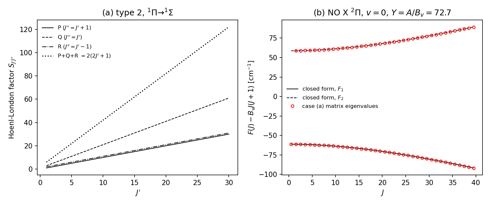

Diatomic band systems, line by line
A diatomic molecule radiates in band systems. An electronic transition
\(n' \to n''\) (a system, e.g. the N2 first positive
system B3\(\Pi_g\) \(\to\) A3\(\Sigma_u^+\))
splits into vibrational bands \((v', v'')\), and each band into
rotational lines \(J' \to J''\) grouped in branches. The radiator
diatomicBands (src/radiation/radiators/derived/diatomicBands)
computes every rotational line of every band of a molecule file
explicitly: its position, its strength and the levels it connects. The
line list is built once at construction (diatomicBandsRead.C reads the
file, diatomicBandsLines.C builds lines and levels); per cell only the
populations, widths and line placement are evaluated (diatomicBands.C).
Class and keywords: Radiating species.
The rovibronic levels are \((n, v, J)\), the same identification as the DSMC ladders of dsmcFoam, so the populations of the levels can come either from temperatures or from the sampled distribution (Level populations).
Systems in the database
src/radiation/database/molecules holds four molecule files
(The spectroscopic database). Every band of a file is computed; there is no
band selection in the dictionary.
File |
Band |
System, upper \(\to\) lower |
Type |
Data |
|---|---|---|---|---|
|
|
first positive, B 3\(\Pi_g \to\) A 3\(\Sigma_u^+\) |
2 |
IPAC (Laher and Espy) |
|
second positive, C 3\(\Pi_u \to\) B 3\(\Pi_g\) |
6 |
IPAC |
|
|
Birge-Hopfield II, b’ 1\(\Sigma_u^+ \to\) X |
1 |
PARADE N2ihl |
|
|
Birge-Hopfield, b 1\(\Pi_u \to\) X |
2 |
PARADE N2ihl |
|
|
Lyman-Birge-Hopfield, a 1\(\Pi_g \to\) X |
2 |
PARADE N2ihl |
|
|
Carroll-Yoshino, c’4 1\(\Sigma_u^+ \to\) X |
1 |
PARADE N2ihl |
|
|
Worley-Jenkins, c3 1\(\Pi_u \to\) X |
2 |
PARADE N2ihl |
|
|
Worley, o3 1\(\Pi_u \to\) X |
2 |
PARADE N2ihl |
|
|
|
first negative, B 2\(\Sigma_u^+ \to\) X 2\(\Sigma_g^+\) |
4 |
IPAC |
|
Meinel, A 2\(\Pi_u \to\) X 2\(\Sigma_g^+\) |
3 |
IPAC |
|
|
|
\(\gamma\), A 2\(\Sigma^+ \to\) X 2\(\Pi\) |
3 |
IPAC |
|
\(\beta\), B 2\(\Pi \to\) X 2\(\Pi\) |
5 |
IPAC |
|
|
\(\delta\), C 2\(\Pi \to\) X 2\(\Pi\) |
5 |
IPAC |
|
|
\(\epsilon\), D 2\(\Sigma^+ \to\) X 2\(\Pi\) |
3 |
Laux (1993) |
|
|
\(\beta'\), B’ 2\(\Delta \to\) X 2\(\Pi\) |
2 |
Laux (1993) |
|
|
\(\gamma'\), E 2\(\Sigma^+ \to\) X 2\(\Pi\) |
3 |
Laux (1993) |
|
|
|
Schumann-Runge, B 3\(\Sigma_u^- \to\) X 3\(\Sigma_g^-\) |
1 |
IPAC |
The transition type (1 to 6) selects the rotational structure: the term-value formulas and the Hoenl-London factors. It is chosen from the term symbols of the two states (section “Rotational structure” below).
Data of a molecule file
Per electronic state, 17 constants: \(g_e\), \(T_e\), \(D_0\),
\(\omega_e\), \(\omega_e x_e\), \(\omega_e y_e\),
\(\omega_e z_e\), \(B_e\), \(\alpha_e\), \(\mu\),
nuspin, altnat, \(D_e\), \(\beta_e\), \(r_e\),
\(A\) (spin-orbit constant) and \(\Lambda\). Energies are in
cm-1 in the file and in J in the code; \(g_e =
(2S+1)(2-\delta_{0,\Lambda})\). Per band: upper and lower state, type and
an integer multiplier smf (1 in every shipped file). Per vibrational
band \((v', v'')\), one row of the transition table: the squared
electronic transition moment \(R_e^2\) [(e a0)2]
and the Franck-Condon factor \(q_{v'v''}\). The format is in
Database files and generators.
Term values and line positions
Per vibrational band the code evaluates, with all constants in J and \(x = v + \tfrac12\),
and the band origin
\(G(v)\) includes the zero-point energy and \(T_e\) is measured from the minimum of the ground state. A rotational line between the term values \(F'(J')\) and \(F''(J'')\) of the two states (given per type below) sits at
The rotational quantum number runs to
built from the lower state, with the \(+1\) inside the root (the NEQAIR85 form kept from the verified version). A band is skipped in a window if \(2\lambda_0 < \lambda_{\min}\) or \(\lambda_0/2 > \lambda_{\max}\), \(\lambda_0 = 1/(100\tilde\nu_0)\).
These positions come from the four-term expansion of the molecule file,
not from the rovibronic energies \(E(n,v,J)\) of the species database
of dsmcFoam. The expansion cannot hold the higher coefficients of the
source fits: the database README lists band-origin differences against
the IPAC tables of a few cm-1 for low \(v\) and up to about
\(10^3\) cm-1 for high \(v\) of O2
Schumann-Runge (src/radiation/database/README.md, “Checks”).
Line strength
Emission
The line-integrated emission of a line of a band \((v', v'')\), upper level \(u = (n', v', J')\), is in cgs form
with \(N_u/g_u\) the upper population per state, \(S_{J'J''}\) the Hoenl-London factor, AF the nuclear-spin alternation factor and \(e a_0 = 2.5415785\times10^{-18}\) esu cm. It follows from the emission \(N_u A\,hc\tilde\nu/(4\pi)\) with the dipole transition probability of one line, \(A = 64\pi^4\tilde\nu^3 S_{J'J''} q R_e^2 (ea_0)^2/(3h\,g_u)\). The code writes it as
with \(n_u/g_u\) in m-3, and places \(\epsilon_{ul}/10^{10}\,\phi_\lambda\) on the grid; the factors \(16\times10^{-5}\) (\(c\) in cm s-1 and erg to J), \(10^{-6}\) (m-3 to cm-3), \(10^{16}\) and \(10^{10}\) combine to W m-3 sr-1 (m-1 after the profile). For type 2, \(c_S\) is halved (below).
The convention for \(R_e^2\) is the degeneracy-summed moment of Laux and Kruger (PARADE “sumre2/fcf”): the database derives it from the band Einstein coefficient as
(Gilmore et al., 1992, Eq. 9), so that the lines of one upper level, summed over branches, give the band emission \(N_{v'} A_{v'v''}\,hc\tilde\nu/(4\pi)\).
Absorption
The absorption follows from the emission by the Einstein relations (generalised Kirchhoff law, Spectral quantities and conventions):
coded as \(\tilde\nu^{-5}\,10^{16}\,\mathrm{AF}\,S\,(\tilde\nu^2 e
a_0)^2 c_S\,(n_l/g_l - n_u/g_u)/(2\times10^{10} h c^2)\) and divided by
\(10^{10}\) on the grid. \(k_{ul}\) is net of stimulated emission:
an inverted line has \(k_{ul} < 0\) (gain), which is kept. The lower
population per state \(n_l/g_l\) is given by the population model
(lineLowerPopulation; Level populations).
Which lines are placed
At construction a line is kept only if its strength and \(\tilde\nu\)
are positive. Per cell, with boltzmannTemperatures a line is placed
only if \(\epsilon_{ul} \ge 10^{-25}\) in the code’s units before the
division by \(10^{10}\) (i.e. \(10^{-35}\) W m-3
sr-1), its absorption included. With cellDistribution a line
below that emission threshold (an empty or unsampled upper level) is
still placed for its absorption alone when \(|k_{ul}|\) passes the
same threshold. The species is skipped in a cell with
\(n_s < 10\) m-3 or \(T_{\mathrm{trans}} < 10\) K.
Rotational structure
Branches
A branch is the set of lines with the same \(\Delta J = J' - J''\): P (\(J'' = J' + 1\)), Q (\(J'' = J'\)), R (\(J'' = J' - 1\)). In multiplet bands each spin component \(F_i\) gives its own main branches (\(P_1, R_2, \dots\)) and the satellite branches between different components (\(^{O}P_{12}, {}^{S}R_{21}, \dots\)).
Hoenl-London factors and their normalisation
The Hoenl-London factor \(S_{J'J''}\) is the rotational part of the line strength. In the code it is normalised so that the lines leaving one upper level, all its components together, sum to
which is \(2J'+1\) for a level whose components all exist at \(J'\). With this normalisation, the sum of the line emissions of a level is the band emission \(N_{v'}A_{v'v''}hc\tilde\nu/4\pi\).
Types 1 and 2: singlet forms (Herzberg 1950)
Type 1, parallel (\(\Delta\Lambda = 0\)), emission from \(J' \ge \Lambda\), \(L = \Lambda\):
with no Q branch for \(\Lambda = 0\) (then \(S_R = J'\), \(S_P = J'+1\)). They sum to \(2J'+1\).
Type 2, perpendicular (\(\Delta\Lambda = \pm1\)), emission from \(J' \ge \Lambda'\), \(L = \Lambda'\) if \(\Lambda' < \Lambda''\), else \(L = -\Lambda'\):
These forms sum to \(2(2J'+1)\) per upper level: they count both \(\Lambda\)-doubling components of the \(\Pi\) (or \(\Delta\)) state. The code therefore halves \(c_S\) for every type-2 band, the factor \((2-\delta_{0,\Lambda'+\Lambda''}) = 2\) (figure, panel a).
Types 3, 5, 6: matrix method in the Hund’s case (a) basis
For multiplet states (doublets and triplets with \(\Lambda > 0\)) the coupling between electron spin and rotation changes with \(J\): from Hund’s case (a) (spin coupled to the internuclear axis, large \(Y = A/B_v\)) at low \(J\) towards case (b) (spin coupled to the rotation) at high \(J\). The code covers all intermediate couplings with the matrix method (Arnold, Whiting and Lyle 1969; Whiting and Nicholls 1974; Kovács 1969, ch. 3). For a state at \(J\) it builds the rotational Hamiltonian of Hill and Van Vleck (1928) in the case (a) basis \(|\Lambda, \Sigma, \Omega = \Lambda + \Sigma\rangle\), \(\Sigma = -S, \dots, S\), restricted to \(|\Omega| \le J\),
and diagonalises it (Jacobi rotations, basis size \(\le 3\), \(S \le 1\)). The eigenvalues are the term values of the spin components; the eigenvectors \(c(\Omega)\) give the mixing. The strength of the line between eigenstate \(u\) at \(J'\) and eigenstate \(l\) at \(J''\) is
with \(q = \Omega' - \Omega''\) (\(\Sigma\) conserved by the dipole operator), \(\langle\cdot|\cdot\rangle\) a Clebsch-Gordan coefficient (Condon-Shortley table) and \(\sigma\) the two signs of a \(\Lambda > 0\) state (the \(\Lambda\)-doubling components, merged in the levels; for \(\Pi\)-\(\Pi\) only the same sign contributes). Every line between the components that exist at \(J'\) and \(J'' = J', J' \pm 1\) is computed, satellites included, and dropped only if \(S < 10^{-12}(2J'+1)\). The limits of this formula are Herzberg’s singlet forms, the pure case (a) and case (b) forms, and Earls (1935) for \(^2\Sigma\)-\(^2\Pi\).
The line positions of these types use closed-form term values; each eigenstate is matched to the closed-form root nearest in energy. With \(Y = A/B_v\):
type 3, \(^2\Sigma\)-\(^2\Pi\) (no centrifugal term):
\[F_{1,2} = B_v\left[(J+\tfrac12)^2 - \Lambda^2 \mp \tfrac12\sqrt{4(J+\tfrac12)^2 + Y(Y-4)\Lambda^2}\right];\]type 5, \(^2\Pi\)-\(^2\Pi\): the same with \(-D_v J^4\) (\(F_1\)) and \(-D_v (J+1)^4\) (\(F_2\));
type 6, \(^3\Pi\)-\(^3\Pi\) (Budó):
\[F_1 = B_v\left[J(J+1) - \sqrt{Z_1} - 2Z_2\right] - D_v (J-\tfrac12)^4,\]\[F_2 = B_v\left[J(J+1) + 4Z_2\right] - D_v (J+\tfrac12)^4,\]\[F_3 = B_v\left[J(J+1) + \sqrt{Z_1} - 2Z_2\right] - D_v (J+\tfrac32)^4,\]\[Z_1 = \Lambda^2 Y(Y-4) + \tfrac43 + 4J(J+1), \qquad Z_2 = \frac{\Lambda^2 Y(Y-1) - \tfrac49 - 2J(J+1)}{3 Z_1}.\]
The eigenvalues of the matrix equal the type-3 and type-5 closed forms
exactly (without \(D_v\)), and Budó’s type-6 forms within
0.6 cm-1 (code comment, diatomicBandsLines.C). Panel (b) of
the figure shows the two components of NO X 2\(\Pi\)
(\(Y = 72.7\), close to case (a)): at \(J = 1/2\) only the
\(\Omega = 1/2\) component exists.
Type 4: \(^2\Sigma\)-\(^2\Sigma\)
Both states are case (b). The levels are keyed by the integer \(J = N\), and six branches are computed: \(R_1, R_2, P_1, P_2\) and the satellites \(F_2' \to F_1''\) and \(F_1' \to F_2''\). The strengths are those of the matrix method above, evaluated at the true \(J\) of each component (\(F_1\): \(J = N + \tfrac12\), \(F_2\): \(J = N - \tfrac12\)). The positions use the type-5 term form with the integer \(J\):
Type 1 term values and triplet splitting
For type 1 the positions are
with \(Z_2\) (as for type 6) only when the upper state is a triplet (\(g_e = 3\) for \(\Lambda = 0\), \(g_e/2 = 3\) otherwise), applied to both states; \(Z_2 = 0\) otherwise. This is the O2 Schumann-Runge case (B 3\(\Sigma_u^-\)).
Type 2 term values
For type 2, \(F = B_v J(J+1) - D_v (J+\tfrac12)^4\), with no spin splitting, even for triplets: the N2 first positive system (B 3\(\Pi_g \to\) A 3\(\Sigma_u^+\)) is computed as a singlet-like perpendicular band, and the NO \(\beta'\) system (B’ 2\(\Delta \to\) X 2\(\Pi\)) with \(\Lambda' = 2\) at the spin-averaged positions.


(a) Type-2 Hoenl-London factors of a 1\(\Pi \to\)
1\(\Sigma\) band and their sum \(2(2J'+1)\) per upper
level, the reason for the halved \(c_S\). (b) Term values of the two
spin components of NO X 2\(\Pi\), \(v = 0\) (constants
of NO.dat): closed form (black lines) and eigenvalues of the case (a)
Hamiltonian of the matrix method (red markers). Script:
_static/figures/diatomic_bands/plot_hoenl_london_terms.py.
Parity, nuclear spin and the alternation factor
In a homonuclear molecule (N2, N2+, O2) the exchange symmetry of the nuclei gives the rotational levels of a \(\Sigma\) state alternating statistical weights. The code applies a per-line alternation factor
with \(a'\) the entry altnat of the upper state and
\(I''\) the entry nuspin (nuclear spin) of the lower state;
AF = 1 if altnat = 0. For 14N (\(I = 1\)) AF is
\(4/3\) or \(2/3\), mean 1; for 16O (\(I = 0\)) it is
2 or 0, i.e. every second rotational level of the lower state is missing.
Because the mean of AF is one, the partition function has no symmetry
number (Level populations).
The database chooses altnat so that the lines favour the lower-state
rotational levels that are symmetric under exchange of the (boson)
nuclei: 2 (even \(N''\)) for \(\Sigma_g^+\) and
\(\Sigma_u^-\) lower states, 1 (odd \(N''\)) for
\(\Sigma_u^+\) and \(\Sigma_g^-\), 0 for a \(\Pi\) lower
state (both parities at each \(J\)), for heteronuclear NO and for
states that are never an upper state. The alternation of a type-3 band is
not defined: a type-3 band with altnat' \(\neq 0\) is a fatal
error, and the N2+ Meinel upper state has altnat 0
(no line-by-line alternation, band-summed strength unchanged).
\(\Lambda\)-doubling (the two parity components \(e/f\) of a \(\Lambda > 0\) state) is not resolved: the two components are one level with weight \((2-\delta_{0,\Lambda})\), and their lines are summed in the strengths.
Levels and statistical weights
Each line creates (or reuses) its upper and lower level, keyed by (state, \(v\), \(J\)), the key the population models match:
types 1, 2, 4 (\(J\) the rotational quantum number of a singlet-like or case (b) treatment): \(g = g_e(2J+1)\);
types 3, 5, 6 (spin components resolved with their own \(J\)): \(g = (2-\delta_{0,\Lambda})\,n(J)\,(2J+1)\), with \(n(J)\) the number of spin components with \(|\Omega| \le J\), e.g. 4 instead of 8 at \(J = 1/2\) of a \(^2\Pi\) state.
The first band that creates a level sets its weight. A half-integer
\(J\) is keyed by \(J - \tfrac12\) (the rotational index of the
DSMC ladder), except when (state, \(v\), \(J-\tfrac12\)) is also
the key of an integer-\(J\) level of different energy, as for
N2+ X 2\(\Sigma_g^+\), lower state of both
the first negative band (type 4, integer \(J = N\)) and the Meinel
band (type 3, half-integer \(J\)): the half-integer level is then
keyed “state v 2J/2” (e.g. X2Sigma 0 5/2). The energy parts of each
level are \(E_{\mathrm{el}} = T_e\), \(E_{\mathrm{vib}} = G(v)\),
\(E_{\mathrm{rot}} = B_v J(J+1)\), the energies of the populations
from temperatures. A level that two bands reach with different energies
is a fatal error.
Line widths
The molecular widths (FWHM, m) are evaluated once per vibrational band at its origin \(\lambda_0 = 0.01/\tilde\nu_0\), with \(M = m/m_u\), \(n\) the radiator density and \(T\) its translational temperature:
Width |
Expression |
|---|---|
Doppler |
\(7.16\times10^{-7}\,\lambda_0\sqrt{T/M}\) |
self |
\(1.33\times10^{-29}\sqrt{2/M}\,\lambda_0^2\sqrt{T}\,n\, \times10^{-6}\times10\times10^{10}\) |
foreign gas |
\(5.85\times10^{-30}\sqrt{1/M + 1/M_f}\,\lambda_0^2\sqrt{T}\,n_f \times10^{-6}\times10\times10^{10}\) |
natural |
\(1.18\times10^{-14}\) (constant) |
Stark |
\(10^{-8}\times0.3\,(10^{-22}\max(n_e, 10^{-6}))^{0.6}\, \lambda_0^2\times10^{10}\) |
with \(n_f = \max(p/k_BT - n, 10^{-40}p/k_BT)\), \(p = \sum_j n_j k_B T_j + n_e k_B T_e\), and the Voigt width \(w_L/2 + \sqrt{w_L^2/4 + w_G^2}\). These are the PARADE cgs/Ångström forms of the verified version; the foreign-gas molar mass is compared with bounds in mismatched units and ends at 10 (pure radiator) or 28.85 (any mixture), the Stark width has no \(T_e\) dependence. The profile and its placement are in Line shapes and broadening.
Forms kept from the verified version
The class header (diatomicBands.H) lists the forms of the verified
version that are kept on purpose, because correcting them changes the
spectra and is a separate decision. The main ones:
The transition-table reader skips exactly one record after the row count; with more comment records before the data, the first rows are undefined (taken as zero) and the last rows unread. The shipped files have one header record per table, so every row is read.
\(k_{\max}\) from the lower state, \(+1\) inside the root.
Populations use \(B_v J(J+1)\) only; positions and the lower population of
boltzmannTemperaturesuse the full \(F\).Type 1: triplet terms of both states switched on by the upper state; \(Z_2\) with \(-4/9\) (sign not confirmed).
Type 2 has no spin splitting.
Type 4 uses integer \(J\) (\(= N\)) in the half-integer term forms.
Types 4-6 refuse \(k_{\max} > 500\).
\(G(v)\) with \(+\omega_e z_e\).
Molecular widths as above (PARADE factors, foreign-gas mass, constant natural width, Stark without \(T_e\)).
smfrounded to an integer.
References
Arnold, Whiting and Lyle (1969). Journal of Quantitative Spectroscopy and Radiative Transfer 9, 775 (as cited in
diatomicBandsLines.C).Earls (1935). Hoenl-London factors of 2\(\Sigma\)-2\(\Pi\) transitions (as cited in
diatomicBands.H).Gilmore, F. R., Laher, R. R. and Espy, P. J. (1992). Franck-Condon factors, r-centroids, electronic transition moments, and Einstein coefficients for many nitrogen and oxygen band systems. Journal of Physical and Chemical Reference Data 21, 1005-1107. DOI 10.1063/1.555910.
Herzberg, G. (1950). Molecular Spectra and Molecular Structure I. Spectra of Diatomic Molecules, 2nd ed. Van Nostrand, New York.
Hill and Van Vleck (1928). Rotational Hamiltonian of multiplet states (as cited in
diatomicBandsLines.C).Kovács, I. (1969). Rotational Structure in the Spectra of Diatomic Molecules. Adam Hilger, London.
Laux, C. O. (1993). Optical diagnostics and radiative emission of air plasmas. PhD thesis, Stanford University.
Whiting and Nicholls (1974). Astrophysical Journal Supplement Series 27, 1 (as cited in
diatomicBandsLines.C).